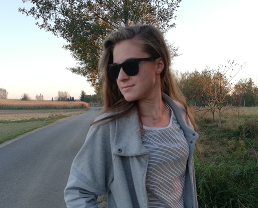

#about_me
  |
|
| FROM: Me |  |
| TO: All the world | |
| Subject: My life | |
| Hi, My name’s Kasia and I’m 18 years old. I’m a student of the third year in technical school in Przeworsk. That small town lies in Podkarpackie region in Poland. Every day in my school I learn new things about programming languages and computer networks. My favourite subjects are especially Maths and Databases projecting. Twice a week I also take part in Phisics extra-classes to prepare for my exam next year. In my free time I like meeting with my friends and developing my IT skills. |
|
#my_hobbies
In my free time I like riding a bike. My distance record is over 85 kilometers.

I’m a huge Marvel Cinematic Universe fan. I’ve also got comics about Wolverine and a tea mug with Iron Man – my favourite superhero.

About month ago I took part in a 3D graphics course and since then I’ve still been improving my skills in that field.
Travelling and visiting new places is the best way to spend time with my friends. I love especially climbing up the volcanos.
#my_certificates
During my school carieer I have got a few Cisco certificates and below there is a list of them:
Click on the link to see the certificate!
- NDG Linux Unhatched
- Introduction to IoT
- NDG Linux Essentials
- Be Your Own Boss
- Enterpreneurship
- Introduction to Cybersecurity
- Introduction to Internet of Everything
- Get Connected
- IT Essentials
I have also got a Certificate of Participation in NetRiders IT Essentials in 2017.
#trip_to_Cisco
On the 13th April 2018 took place my first trip to Cisco Systems in Cracow. I went there with my class and teachers from my school. During the visit we had the opportunity to get to know the history of the firm and see the places in which the engineers create their projects. We visited the Security Operations Center and the Lab. I was really fascinated by the devices that ensure reliability of computer networks. After the chat about being safe on the Internet and the lesson how to use VoIP phones we took part in a small competition. That trip showed me what the work is like in the corporation and encouraged me to learn more and more each day.